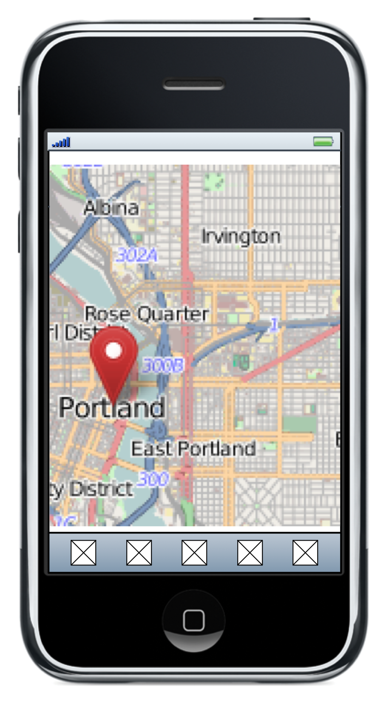
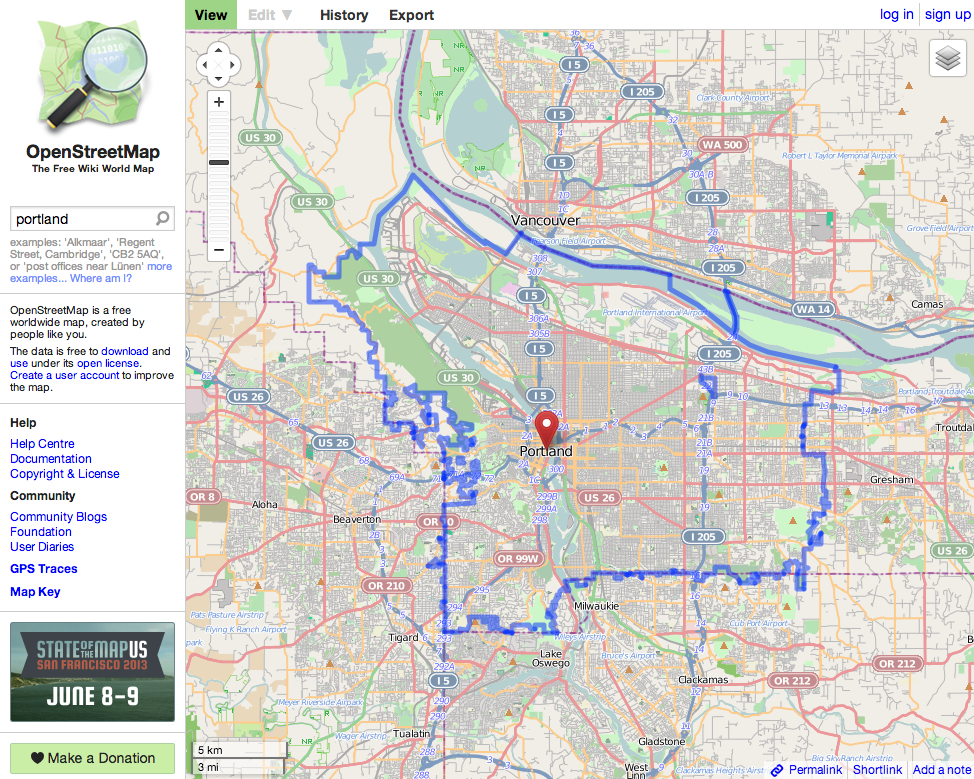
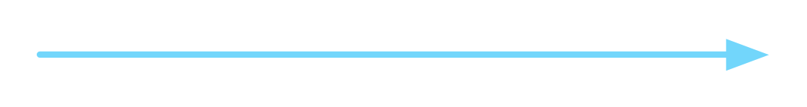

- Base Format
- HTTP Verbs
- URI
- Media Type (aka MIME type)
What is REST?
- Web Services
- A web service is a method of communication between two electronic devices over the World Wide Web.
  Get Portland map data
Add a new road
- REST
- A style of software architecture for distributed systems such as the World Wide Web.
4 components of the REST request
Base Format
{
"name": "Larry Garfield",
"role": {
"name": "Initiative Owner",
"project": "WSSCI"
},
"vested": true
}
<contributor>
<name>Larry Garfield</name>
<role>
<name>Initiative Owner</name>
<project>WSCCI</project>
</role>
<vested>true</vested>
</contributor>
URI
Resource
- http://example.com/entity/node/1
- http://example.com/node/1
- http://example.com/user/1
Link Relation
- http://example.com/node/article/field_tags
- http://drupal.org/rest/relations/field-configuration
POST /endpoint
{ id: 3 }
POST /thing/3
Media Type
- application/json
- application/hal+json
Reserved properties: _links and _embedded
- application/vnd.github+json
All resources may have one or more *_url properties linking to other resources.
/node/1.json
/node/1.hal_json
Accept: application/json
HTTP method
- GET
- Go fetch this page and bring it back to me. Don't change it.
- POST
- Here's some data, go make a thing for me.
- PATCH
- Here are some changed fields, go update them on the existing thing.
- DELETE
- Get rid of that thing.
/node/1/get
/node/add
GET /node/1
POST /node
- Base Format
- JSON
- URI
- /entity/node/1
- HTTP method
- GET
- Media type
- application/json
- Base Format
- JSON
- URI
- /entity/node
- HTTP method
- POST
- Media type
- application/hal+json
Richardson Maturity Model
REST in Drupal
How we implement those standards
What are we trying to do?
- Programmatically getting stuff into and out of Drupal
- Drupal acts as a web service interface provider
- Data is exchanged in a machine-readable format
Use cases in Drupal

- A mobile phone app retrieves recent news nodes
- On-site Javascript creates taxonomy terms from user input
- Deploying staging content entities to the production site
- A public REST API that allows clients to place commerce orders
- A private REST API to migrate third party data into Drupal
- Connecting Drupal to external systems
Modules in Drupal 7 contrib: Services
- http://drupal.org/project/services
- Endpoint concept with custom URL paths
- Caters for RPC and SOAP also
- Uses drupal_form_submit() for write operations
- Only covers hard coded entities like nodes, comments, users
- Explicit authentication info hooks.
- No hypermedia controls
Drupal 7 contrib: RESTWS and Services Entity API
- RESTWS http://drupal.org/project/restws
- Relies on Entity API and metadata about entities
- No endpoints: uses /node/1.json or /node/1.xml
- No configuration: exposes any entity type out of the box
- Access control on top of Entity API and Field API
- Standard user authentication over session cookies or HTTP Basic Auth submodule
- Services Entity API http://drupal.org/project/services_entity
- Combines approaches from Services and RESTWS
- Configurable endpoints + Entity API for data management
Modules in Drupal 8 core
- RESTful Web Services (REST module)
- Serialization module
- HAL module
Resources and Operations
- A resource is the object of interest. Example: the node resource
- An operation is an action to read or manipulate a resource.
| Operation | HTTP request method | path |
|---|---|---|
| Create | POST | /entity/node |
| Read | GET | /entity/node/1 |
| Update | PATCH | /entity/node/1 |
| Delete | DELETE | /entity/node/1 |
Entity resource plugins
- New Entity API with field metadata
- We know all properties and fields an entity has
- REST API support can be enabled for any entity known to the system
- One derivative plugin for each entity type
- Access control on the entity level
- Access control on the field level
Authentication, Authorization and access control
- Authentication is not handled by REST module
- The global user object has to be populated when the request is received
- Standard Drupal session cookie authentication in core
- Extra user permissions to authorize web service operations
- Additional access control in the resource plugin itself (example: entity and field access in the entity plugin)
GET Demonstration
Now configure this for real
Enabling modules
- Drupal 8 installation
drush si --account-name=klausi --account-pass=secret \ --site-name=drupal-8.localhost
- Serialization module (serialization)
- RESTful Web Services module (rest)
- HAL (Hypertext Application Language) module (hal)
drush en rest hal --yes
Enabling the node resource
- Copy files in active config to the config staging directory
cp sites/default/files/config_SNJe.../active/* \ sites/default/files/config_SNJe.../staging/
- Edit rest.settings.yml in the config staging directory
resources: 'entity:node': # We just enable the node resource alone. GET: # Enable HTTP GET requests. hal_json: 'TRUE' # Only the HAL format is enabled.- Sync the configuration at admin/config/development/sync
- Clear caches
drush cc all # UI: /admin/config/development/performance
Configure permissions and add a node
- Go to /admin/people/permissions#module-rest and grant "Access GET on Content resource" to the anonymous user role.
- Note: node and field access still applies on top of that.
drush role-add-perm anonymous 'restful get entity:node'
- Create a node at /node/add/page
Fetch the node with cURL
- With cURL from the command line
curl -H "Accept: application/hal+json" --request GET \ http://drupal-8.localhost/entity/node/1
- With cURL from PHP
$ch = curl_init(); curl_setopt_array($ch, array( CURLOPT_URL => 'http://drupal-8.localhost/entity/node/1', CURLOPT_HTTPHEADER => array('Accept: application/hal+json'), CURLOPT_RETURNTRANSFER => TRUE, )); $response = json_decode(curl_exec($ch)); print_r($response);
Fetch the node with Guzzle
use Guzzle\Http\Client;
$client = new Client('http://drupal-8.localhost');
// If in a Drupal environment use the HTTP client service.
$client = Drupal::httpClient()->setBaseUrl('http://drupal-8.localhost');
$request = $client->get('entity/node/1');
$request->addHeader('Accept', 'application/hal+json');
$response = $request->send()->json();
print_r($response);
The node response
{
"nid": [
{
"value": "1"
}
],
"uuid": [
{
"value": "f11b6d96-5709-4779-815c-9266f79b21c7"
}
],
"vid": [
{
"value": "1"
}
],
"type": [
{
"value": "page"
}
],
"langcode": [
{
"value": "en"
}
],
"title": [
{
"value": "Rest"
}
],
"_embedded": {
"http://localhost/d8ser/rest/relation/node/page/uid": [
{
"_links": {
"self": {
"href": "http://localhost/d8ser/user/1"
},
"type": {
"href": "http://localhost/d8ser/rest/type/user/user"
}
}
}
],
"http://localhost/d8ser/rest/relation/node/page/revision_uid": [
{
"_links": {
"self": {
"href": "http://localhost/d8ser/user/1"
},
"type": {
"href": "http://localhost/d8ser/rest/type/user/user"
}
}
}
]
},
"status": [
{
"value": "1"
}
],
"created": [
{
"value": "1372512896"
}
],
"changed": [
{
"value": "1372512901"
}
],
"comment": [
{
"value": "1"
}
],
"promote": [
{
"value": "0"
}
],
"sticky": [
{
"value": "0"
}
],
"tnid": [
{
"value": "0"
}
],
"translate": [
{
"value": "0"
}
],
"revision_timestamp": [
{
"value": "1372512901"
}
],
"log": [
{
"value": ""
}
]
}
Building lists with Views
- Views is a configurable query builder in Drupal 8 core
- Display plugin that renders Views data with Serializer
- Comparable to Views Datasource in Drupal 7 http://drupal.org/project/views_datasource
- Support for outputting whole entities
- Show only selected fields for one entity item
POST Demonstration
Writing new nodes
Enable POST configuration
- Edit rest.settings.yml in the config staging directory and import it as usual:
resources: 'entity:node': GET: hal_json: 'TRUE' POST: hal_json: 'TRUE'- Grant the "Access POST on Content resource" to the administrator user role.
Obtaining a session with Guzzle
use Guzzle\Http\Client;
use Guzzle\Plugin\Cookie\CookiePlugin;
use Guzzle\Plugin\Cookie\CookieJar\ArrayCookieJar;
$cookiePlugin = new CookiePlugin(new ArrayCookieJar());
$client = new Client('http://drupal-8.localhost');
$client->addSubscriber($cookiePlugin);
$client->post('user', null, array(
'name' => 'klausi',
'pass' => 'secret',
'form_id' => 'user_login_form',
))->send();
// $client holds a session cookie now. All future $client requests
// will send the cookie along
POSTing a node with Guzzle
// Extra GET request to retrieve the CSRF protection token.
$token = $client->get('rest/session/token')->send()->getBody(TRUE);
$node = array(
'_links' => array(
'type' => array(
'href' => 'http://drupal-8.localhost/rest/type/node/page'
)
),
'title' => array(0 => array('value' => 'New node title')),
);
$data = json_encode($node);
$client->post('entity/node', array(
'Content-type' => 'application/hal+json',
'X-CSRF-Token' => $token,
), $data)->send();
Resource plugins
Let's take a look inside
Resource plugins
- Separation of data handling and serialization
- Classes where specially named methods correspond to HTTP methods
- One entity plugin with derivatives for all entity types
- Contributed modules can easily override/extend/provide plugins
Dblog resource plugin example
GET http://example.com/dblog/1
/**
* @Plugin(id = "dblog")
*/
class DBLogResource extends ResourceBase {
public function get($id = NULL) {
if ($id) {
$record = db_query("SELECT * FROM {watchdog} WHERE wid = :wid",
array(':wid' => $id))
->fetchAssoc();
if (!empty($record)) {
return new ResourceResponse($record);
}
}}}
Request method mapping example
GET http://example.com/dblog/1
/**
* @Plugin(id = "dblog")
*/
class DBLogResource extends ResourceBase {
public function get($id = NULL) {
if ($id) {
$record = db_query("SELECT * FROM {watchdog} WHERE wid = :wid",
array(':wid' => $id))
->fetchAssoc();
if (!empty($record)) {
return new ResourceResponse($record);
}
}}}
Plugin mapping example
GET http://example.com/dblog/1
/**
* @Plugin(id = "dblog")
*/
class DBLogResource extends ResourceBase {
public function get($id = NULL) {
if ($id) {
$record = db_query("SELECT * FROM {watchdog} WHERE wid = :wid",
array(':wid' => $id))
->fetchAssoc();
if (!empty($record)) {
return new ResourceResponse($record);
}
}}}
ID mapping example
GET http://example.com/dblog/1
/**
* @Plugin(id = "dblog")
*/
class DBLogResource extends ResourceBase {
public function get($id = NULL) {
if ($id) {
$record = db_query("SELECT * FROM {watchdog} WHERE wid = :wid",
array(':wid' => $id))
->fetchAssoc();
if (!empty($record)) {
return new ResourceResponse($record);
}
}}}
Dblog response HAL example
GET http://example.com/dblog/1 Accept: application/hal+json
{
"wid": "1",
"uid": "0",
"type": "system",
"message": "%module module installed.",
"variables": "a:1:{s:7:\"%module\";s:5:\"dblog\";}",
"severity": "6",
"link": "",
"location": "http://drupal-8.localhost/core/install.php?langcode=en&profile=standard&id=1&op=do_nojs&op=do",
"referer": "http://drupal-8.localhost/core/install.php?langcode=en&profile=standard&op=start&id=1",
"hostname": "127.0.0.1",
"timestamp": "1367615996"
}
Dblog response XML example
GET http://example.com/dblog/1 Accept: application/xml
<?xml version="1.0"?>
<response>
<wid>1</wid>
<uid>0</uid>
<type>system</type>
<message>%module module installed.</message>
<variables>a:1:{s:7:"%module";s:5:"dblog";}</variables>
<severity>6</severity>
<link></link>
<location>
<![CDATA[http://drupal-8.localhost/core/install.php?langcode=en&profile=standard&id=1&op=do_nojs&op=do]]>
</location>
<referer>
<![CDATA[http://drupal-8.localhost/core/install.php?langcode=en&profile=standard&op=start&id=1]]>
</referer>
<hostname>127.0.0.1</hostname>
<timestamp>1367615996</timestamp>
</response>
REST request pipeline
Serialization
Getting things to JSON (et al) and back again
Formats in core
- JSON
- XML (kinda)
- Hypermedia Application Language (HAL) JSON
Symfony Serializer
$serializer->serialize($object, $format, $context)

Fine grained control
{
...
"field_image": 5,
...
}
{
...
"field_image": "files/foo.png",
...
}
Normalizers
Chain of responsibility
EntityReferenceItemNormalizer
FieldItemNormalizer
FieldNormalizer
EntityNormalizer
$object is instance of Drupal\image\Type\ImageItem $format is 'json'
supportsNormalization($object, $format)
FALSE
supportsNormalization($object, $format)
TRUE
ImageItemNormalizer
supportsNormalization($object, $format)
TRUE
What's next?
Getting to Level 3
Richardson Maturity Model
Making a doctor's appointment via API
Get a list of open slots in the schedule
GET /doctors/slots HTTP/1.1 Accept: application/hal+json Host: med.org

Server returns list of open appointments
HTTP/1.1 200 OK Content-Type: application/hal+json
{
...
"_embedded": {
"http://med.org/rels/open-slots": [
{
"_links": {
"self": { "href": "/slots/97" },
"http://med.org/rels/book": {
"href": "/slots/97"
}
}
"id": 97,
"doctor": "Dr. Doe",
"start": 2013-05-23T16:00:00,
"end": 2013-05-23T16:50:00
},
...
]
}
}
Client chooses the appointment and POSTs to the booking URI
POST /slots/97 HTTP/1.1 Content-Type: application/hal+json
{
"_links": {
"http://med.org/rels/patient": {
"href": "/patients/linclark"
}
}
}
Server returns confirmation
HTTP/1.1 201 Created Location: http://.../slots/97/appointment
...and links that tell the client what it can do next
{
"_links": {
"self": {
"href": "/slots/97/appointment"
},
"http://med.org/rels/patient": {
"href": "/patients/linclark"
},
"http://med.org/rels/cancel": {
"href": "/slots/97/appointment"
}
...
}
}
2 benefits of hypermedia
it allows the server to change its URI scheme without breaking clients
...aka decoupling
it helps client developers explore the protocol
...aka discoverability
Decoupling
$cancel_url = $base . '/slots/' . $appt['id'] . '/appointment';Using link relations:
$cancel_url = $appt['http://med.org/rels/cancel']['uri'];
Discoverability

- http://med.org/rels/patient
- http://med.org/rels/cancel
- http://med.org/rels/add-symptom
Hypermedia in Drupal
- Entity reference, etc
- Entity management links?
- Views pagination?
Questions?